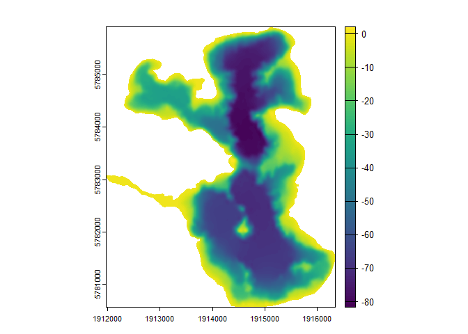

The goal of bathytools is to facilitate the generation of bathymetric data for lakes and reservoirs. The package provides functions to generate depth points from bathymetric data, and to rasterise these points into a bathymetric raster. The package is designed to work with data from the AEME project, but can be used with any bathymetric data.
Development
This package was developed by LimnoTrack as part of the Lake Ecosystem Restoration New Zealand Modelling Platform (LERNZmp) project. 
Installation
You can install the development version of bathytools from GitHub with:
# install.packages("pak")
pak::pak("limnotrack/bathytools")Example
This is a basic example which shows you how to generate a bathymetric raster from a shoreline and depth points:
library(bathytools)
## basic example code
shoreline <- readRDS(system.file("extdata/rotoma_shoreline.rds",
package = "bathytools"))
point_data <- readRDS(system.file("extdata/depth_points.rds",
package = "bathytools"))
bathy <- rasterise_bathy(shoreline = shoreline, point_data = point_data,
crs = 2193)
#> Generating depth points... [2024-09-18 15:27:27]
#> Finished! [2024-09-18 15:27:27]
#> Interpolating to raster... [2024-09-18 15:27:27]
#> Adjusting depths >= 0
#> Finished! [2024-09-18 15:27:49]